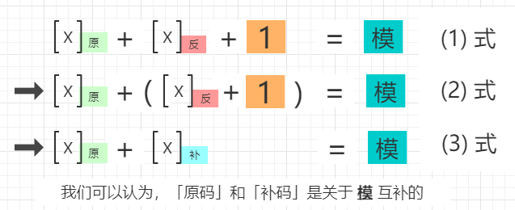

一，复习二进制补码
1，在计算机中以何种形式来存储数字？
以二进制形式存储，其实所有数据都是以二进制形式存储的，这是由计算机硬件决定的。
2，负数在计算机中如何表示？
我们知道现代电子计算机只能识别二进制的 0 和 1 两个元素，而现实中的「数」却有正负数之分，那么负数在计算机中如何表示呢？
例如，想表示二进制数 1010 的负数，不能使用 -1010 的形式，因为这引入了 0 和 1 之外的符号，计算机不能识别。
计算机的设计者们没有引入新的符号，而是设计了 补码 来表示负数（这是数学规律实际运用的实例，也是一项伟大的发明）。
在二进制补码体系中，数字的表示法有以下三种：原码、反码、补码。（我们可以先记住下面的结论）
- 原码：符号位加上真值的绝对值，即用最高位（左边第一位）表示符号，0 表示正，1 表示负，其余位表示值的大小。
- 反码：
- 正数的反码与其原码相同；
- 负数的反码是在其原码的基础上, 符号位不变，其余逐位取反所得。
- 补码：
- 正数的补码就是其本身；
- 负数的补码是在其原码的基础上, 符号位不变, 其余各位取反，然后+1。 (即在反码的基础上+1)
现在可以对第 1 题的回答更进一步，计算机中的数字是以 二进制补码 形式存储的。
3，为什么定义上述的方法计算补码？
以下为个人理解，如有错误，请各位指出，非常感谢。
特别提示：讨论数字的二进制表示，需要先确定 字长，因为不同字长，能表示的数的范围不同。这里我们假定计算机的 字长 为 8 位。
首先，我们来认识「模」的概念。
模，可以理解为一个具有周期性的计数系统的最小正周期。
例如，时钟的一个周期为 12 小时，一周的周期为 7 天，一年的周期为 12 个月，角度的周期为 360 度，二进制的逢 2 进 1，十进制的逢 10 进 1。
接着，我们来验证一个结论：不管是几位的二进制数，它的 「原码」 + 「反码」 + 1 = 模。

为什么高位是可以直接舍弃的？ 因为高位永远会是模的倍数，在模的过程中会被清 0。
然后，我们来看等式的变形：

- 最后，再来回顾一下补码的计算方法，步骤如下：
- step 1: 取绝对值；
- step 2: 逐位取反；
- step 3: 给 step 2 得到的结果 + 1。
这个方法并不是补码的理论基础，被优先采用是因为它最简单、最直接和高效，在设计 CPU 时也正是因为它而简化了电路。在计算过程中遇到负数需要转换为补码时，由 CPU 内部的补码电路完成。
4，符号位如何定义？又是如何参与运算的？
其实，从上面的示例可知，计算机在运算过程中根本就 完全没有考虑符号位，而是仅仅执行了单纯的加法运算。运算的结果，也没有人为地添加符号位。
这是为什么呢？ 原因就是，符号位本来就不是人为定义的，而是在补码运算中计算所得的。
正是因为在补码运算中，存在左边第一位（最高位）为 0 则是正数，为 1 则是负数这个规律，我们才方便地 认定第一位为符号位，人为定义的符号位不可能满足数学规则参与数学运算。详情请参看 二进制补码计算原理详解。
由此，我们就不用再死记硬背，也不用再那么地在意符号位了。
5，补码的原理是什么？
同余原理，详情请参看 原码, 反码, 补码 详解。
6，补码带来哪些好处？
- 1，首先保证了运算的正确性；
- 2，将 减法 变成了 加法，也不需要定义「正数+正数」和「正数+负数」两套运算规则了；
- 3，为计算机设计电路时，只需要「加法电路+补码电路」，就可以完成所有整数的加法运算了。